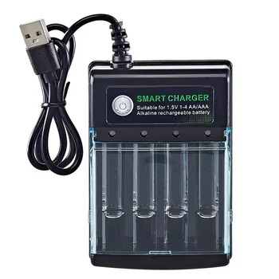

Discover the smart and portable 1.5V USB charger for AA and AAA rechargeable batteries. Featuring 4 independent charging slots and a protective cover, this intelligent charger is perfect for on-the-go power. USB input (5-20V DC) for versatile charging. Certified CE, FCC, RoHS.
Ready to explore this product?View the current product details and options.
View product